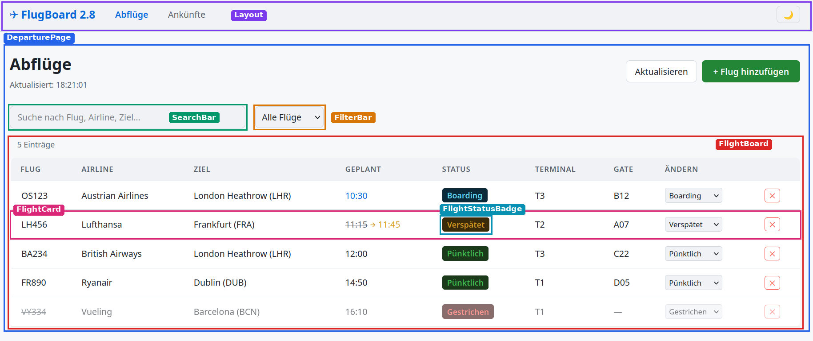

Vorlage — Konzeptdokument
Konzept: FlugBoard
So sieht ein grobes Konzept für unser Kursprojekt FlugBoard aus (Stand Lektion 2.8). Verwende denselben Aufbau für deine eigene App: kurze Beschreibung, Funktionen, Datenmodell, Ansichten, Komponenten und Umsetzungsschritte. Ein bis zwei Seiten reichen – es ist ein Plan, kein Roman. Er darf sich während der Umsetzung ändern.
1 — Idee
FlugBoard ist eine Anzeigetafel für den Flughafen Wien-Schwechat. Sie zeigt Abflüge und Ankünfte als Tabelle, aktualisiert sich automatisch und erlaubt dem Flughafenpersonal, Flüge anzulegen, zu löschen und ihren Status zu ändern. Die Daten kommen von einem eigenen Backend mit Datenbank.
2 — Funktionen
- Abflüge und Ankünfte auf getrennten Seiten anzeigen, nach geplanter Zeit sortiert
- Status farbig hervorheben (Pünktlich, Verspätet, Boarding, Gestartet, Gelandet, Gestrichen); bei Verspätung alte und neue Zeit zeigen
- Suche nach Flugnummer, Airline oder Ziel; Filter nach Status
- Flug über ein Formular anlegen, löschen und den Status direkt in der Tabelle ändern
- Klick auf einen Flug öffnet eine Detailseite
- Daten alle 30 Sekunden automatisch neu laden, zusätzlich manuell über „Aktualisieren“
- Dark/Light-Theme; Filter und Theme bleiben nach dem Neuladen erhalten
3 — Datenmodell
Ein einziger Datentyp reicht: der Flug.
| Feld | Typ | Beispiel |
|---|---|---|
id | Zahl | 1 |
flightNumber | Text | OS123 |
airline | Text | Austrian Airlines |
type | 'departure' | 'arrival' | departure |
airport | Text (Ziel bzw. Herkunft) | London Heathrow (LHR) |
scheduledTime | Text „HH:MM“ | 10:30 |
expectedTime | Text, optional | 11:45 (nur bei Verspätung) |
status | einer von 6 Werten | boarding |
terminal | Text | T3 |
gate | Text, optional | B12 |
4 — Ansichten
| Seite | URL | Inhalt |
|---|---|---|
| Abflüge | /departures | Kopf mit Aktionen, Suche/Filter, Tabelle der Abflüge (Startseite) |
| Ankünfte | /arrivals | wie Abflüge, nur Ankünfte |
| Flugdetails | /flight/:id | alle Daten eines Flugs, Zurück-Button |
| Nicht gefunden | alle anderen | Hinweis und Link zur Startseite |
5 — Komponenten
Die Oberfläche wird in kleine Komponenten zerlegt, jede mit genau einer Aufgabe. Daten fließen als Props nach unten, Änderungen gehen über Callbacks nach oben.

Die Abflug-Seite mit ihren Komponenten (Klick öffnet das Bild in voller Größe). Nicht zu sehen:
AddFlightForm erscheint erst nach „+ Flug hinzufügen“, EmptyState nur
bei einer leeren Liste.
App Routen festlegen
└── Layout Navigation (Abflüge | Ankünfte), Theme-Umschalter
├── DeparturePage lädt Flüge, hält Filter, Kopf mit Aktionen
│ ├── AddFlightForm Formular für neuen Flug (ein-/ausblendbar)
│ ├── SearchBar Suchfeld
│ ├── FilterBar Status-Auswahl, „Zurücksetzen“
│ └── FlightBoard Tabelle mit Kopfzeile und Anzahl
│ ├── FlightCard eine Zeile: Zeit, Status ändern, Löschen
│ │ └── FlightStatusBadge farbiges Status-Label
│ └── EmptyState Hinweis, wenn keine Flüge passen
├── ArrivalPage wie DeparturePage
├── FlightDetailPage lädt einen Flug per ID
│ └── FlightDetail Detailansicht
└── NotFoundPage Hinweis bei unbekannter URLLogik außerhalb der Komponenten:
useFlights– lädt die Flüge vom Backend, Polling, Anlegen/Löschen/Status ändernuseFlightFilters– Suche und Filter, liefert die gefilterte und sortierte ListeuseLocalStorage– merkt sich Einstellungen im BrowserThemeContext– Dark/Light-Theme für die ganze App
6 — Backend
Kleines REST-Backend (Deno + Hono), Daten in einer SQLite-Datenbank.
| Methode | Pfad | Zweck |
|---|---|---|
| GET | /api/flights | alle Flüge (optional ?type=, ?status=) |
| GET | /api/flights/:id | ein Flug |
| POST | /api/flights | Flug anlegen |
| PATCH | /api/flights/:id | Status ändern |
| DELETE | /api/flights/:id | Flug löschen |
7 — Umsetzungsschritte
Jeder Schritt ergibt eine lauffähige App, die etwas mehr kann als vorher.
- Statische Tabelle mit festen Beispieldaten in einer Datei
- In Komponenten zerlegen (
AirportHeader,FlightBoard,FlightCard), Daten als Array, Liste mit.map(), Status-Badges, Sortierung - Interaktion: Flug auswählen, Detailansicht, Abflüge/Ankünfte umschalten
- Suche, Filter und Formular zum Anlegen
- Daten vom Backend laden, automatisch aktualisieren; Anlegen/Löschen/Status über die API
- Aufräumen: Theme per Context, Logik in Custom Hooks
- Tests für wichtige Komponenten
- Mehrere Seiten mit React Router
- Daten dauerhaft in einer Datenbank speichern
Checkliste für dein Konzept
- Ist die Idee in zwei, drei Sätzen verständlich?
- Gibt es mindestens eine Liste, ein Formular und eine Detailansicht?
- Sind alle Felder deines Datentyps mit Typ und Beispiel aufgeführt?
- Hat jede Komponente im Baum genau eine Aufgabe?
- Ist klar, welche Daten vom Backend kommen und welche Endpunkte du brauchst?
- Kannst du die App in kleinen Schritten bauen, von denen jeder für sich läuft?